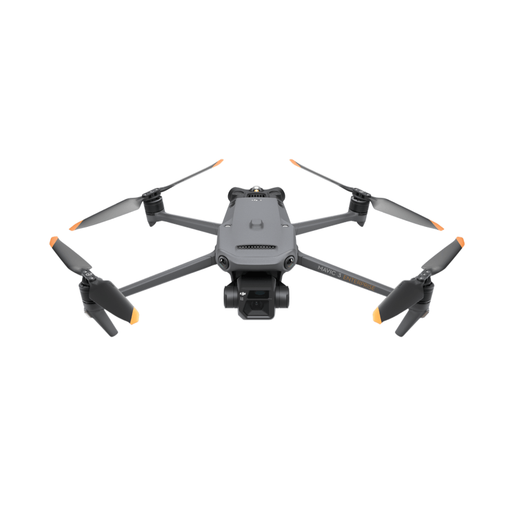
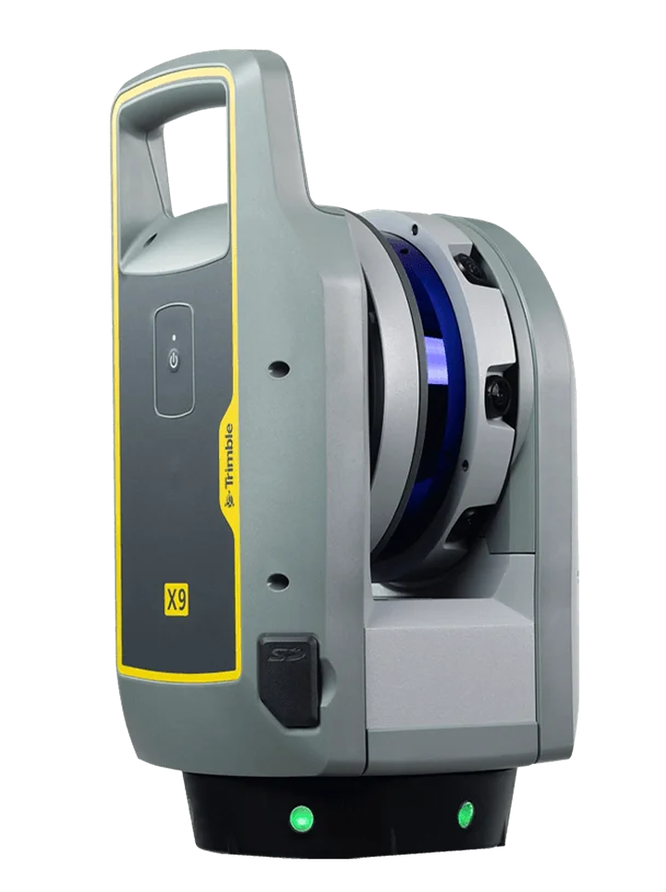
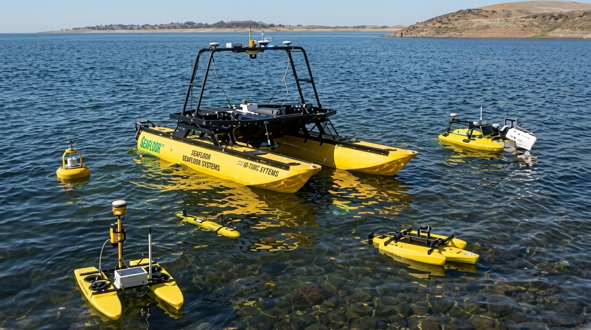
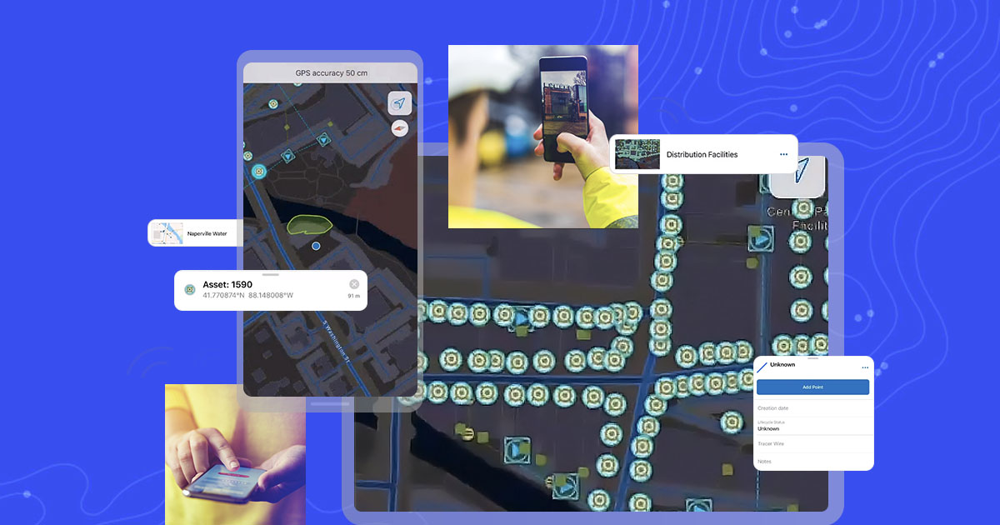
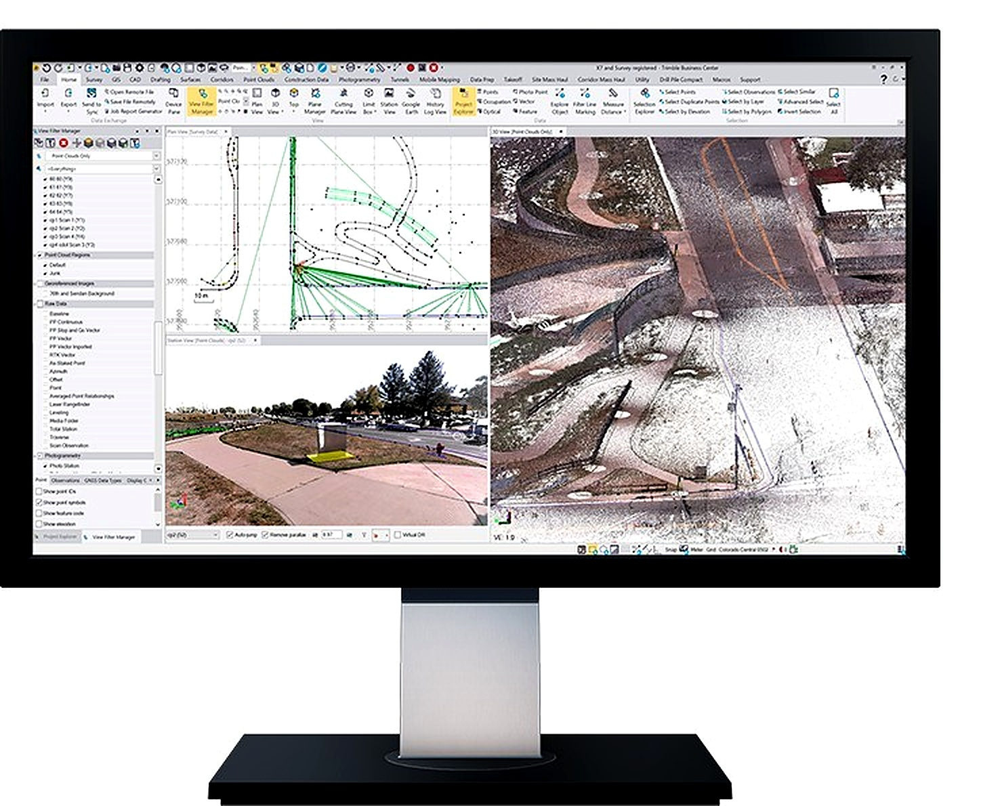
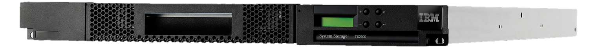
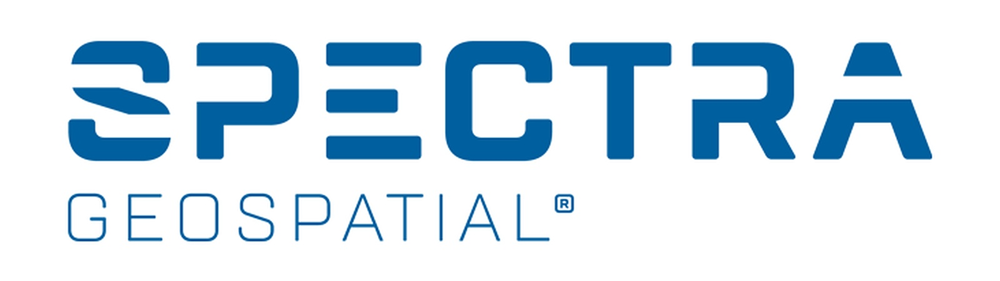
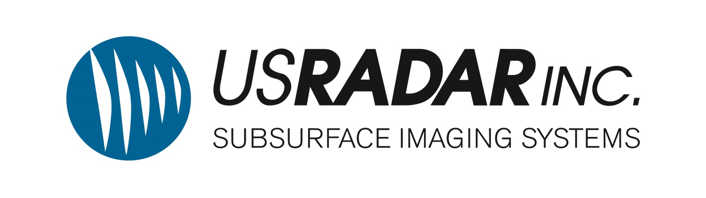
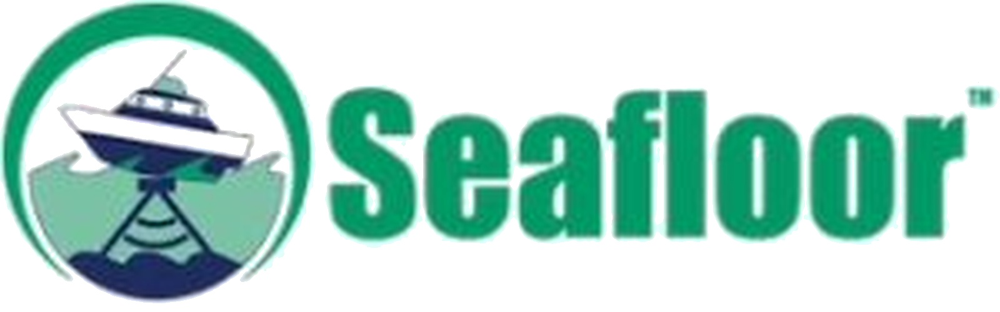

Trimble R12i GNSS Receiver
TIP Tilt Compensation
ProPoint RTK Engine · Multi-Constellation GNSS · IP68 Rugged Construction

 TrimbleGNSS · Total Stations · Scanning
TrimbleGNSS · Total Stations · Scanning DJI EnterpriseDrones · LiDAR · Dock
DJI EnterpriseDrones · LiDAR · Dock Esri ArcGISGIS & SDI
Esri ArcGISGIS & SDI Spectra GeospatialGNSS & Robotic Stations
Spectra GeospatialGNSS & Robotic Stations Nikon PrecisionOptical Survey
Nikon PrecisionOptical Survey US RadarGround Penetrating Radar
US RadarGround Penetrating Radar Seafloor SystemsHydrographic Survey
Seafloor SystemsHydrographic Survey IBM Tape StorageEnterprise Data Archive
IBM Tape StorageEnterprise Data Archive XGRIDSHandheld SLAM LiDAR
XGRIDSHandheld SLAM LiDAR
From millimeter-accuracy Trimble GNSS and robotic total stations to DJI Enterprise drone LiDAR, US Radar subsurface GPR, and enterprise Esri spatial infrastructure — we provide end-to-end technology and certified service backing.

Industry-standard positioning technology designed to deliver repeatable millimeter accuracy in dense jungle canopies, urban canyons, and challenging African field environments.
TIP Tilt Compensation
ProPoint RTK Engine · Multi-Constellation GNSS · IP68 Rugged Construction
MagDrive Servo Technology
SurePoint Auto-Compensation · Trimble VISION Video · Trimble Access Integration

Spectra FOCUS 35 & FOCUS 50 Robotic Stations
Nikon XS & XF Manual Stations · Precision Optical Auto-Levels · Local Calibration Support

Accelerate spatial capture across vast mines, agricultural estates, and highway corridors with high-efficiency RTK drone platforms and survey-grade sensors.
55-Minute Flight Time
IP55 Weather Rating · 2.7kg Payload Capacity · Multi-Frequency RTK
Mechanical Shutter Camera
RTK Module Support · 640×512 Thermal Sensor · 45-Minute Flight Time

5 LiDAR Returns
250m Detection Range · Real-Time Point Cloud Coloring · Autonomous Dock Operations

Transform complex physical assets, industrial plants, historical buildings, and GPS-denied tunnels into dense, millimeter-accurate 3D point clouds.
Automatic Self-Calibration
Full Scan Under 2 Minutes · In-Field Auto-Registration · Ideal For BIM & Tunnels

2.187M Points/Second
365m Operational Range · 80MP HDR Color Imagery · Structural Deformation Monitoring
Real-Time Continuous SLAM
Handheld, Backpack Or Drone-Mountable · Minutes-Fast Building Capture · BIM/CAD Point Cloud Export
Non-destructive underground utility imaging with US Radar GPR, paired with autonomous acoustic bathymetry from Seafloor Systems for reservoirs, dams, and rivers.
Simultaneous 250/500/1000 MHz
GPS-Georeferenced CAD/GIS Export · Real-Time 3D Depth Slicing · Rugged All-Terrain Cart

Autonomous Waypoint Navigation
RTK GNSS Integration · Siltation Volume Auditing · Removes Crew From The Water

Transform raw field survey points into authoritative spatial intelligence. As an Esri Silver Partner, we license, deploy, and support the full ArcGIS platform.
Advanced 2D/3D Spatial Analysis
Powerful Mapping & Visualization · Desktop Geoprocessing Automation · World's Leading GIS Software
Self-Hosted GIS System
On-Premises, Cloud Or Hybrid · Centralized Spatial Data Management · Scalable Enterprise Architecture

Mobile Field Data Collection
Real-Time Map Navigation · Mobile Workforce Management · Offline-Capable Data Capture

Bridge field instruments directly to engineering deliverables with Carlson Software, Trimble Business Center, and Autodesk Civil 3D.
Field-To-Finish Workflow
Point Cloud & GNSS Data · Volumetric & Surface Tools · Direct CAD/GIS Export

Hardware-Independent Data Collection
Geological Block Modeling & Pit Design · Earthwork Cut/Fill Estimation · AutoCAD/IntelliCAD Compatible
Dynamic 3D Corridor Modeling
Grading & Earthwork Analysis · Integrated Survey & Design Data · Automated Plan Production
Building Information Modeling
Coordinated Architectural & MEP Design · Parametric 3D Building Components · Construction Documentation
We supply Datamine’s geology and mine planning software suite — trusted for resource estimation, geological modelling, and open-pit optimisation.
True Reflection Of The Subsurface
Resource Modelling & Estimation · Geological Domain Interpretation · Block Model Development
Geological Interpretation Environment
Implicit 3D Modelling · Structural & Stratigraphic Analysis · Seamless Studio RM Integration
Photogrammetry-Based Mapping
Rock Face & Pit Wall Imaging · Structural Geology Capture · Rapid Non-Contact Data Collection
Servers, structured cabling, and IBM tape storage for long-term retention and air-gapped, cyber-resilient backup — the infrastructure layer behind your spatial data.
Enterprise Server Clustering & DR
Structured Cabling & Fiber · GIS/ERP Integration · SLA-Backed Managed Support
Next-Generation Cloud Storage
Up To 926PB With LTO 10 · Integrated Fleet Management · High Storage Density
Low-Profile Entry-Level Storage
Up To 162TB With LTO 9 · Supported On Open System Platforms · Cost-Effective Long-Term Retention

Our relationship begins when you acquire your system. Through our certified calibration laboratory, 24/7 technical HelpDesk, and hands-on Training Academy, we guarantee maximum equipment productivity and field uptime.
Our Kampala facility is equipped with optical collimators and electronic distance meter (EDM) baseline test benches to service and calibrate optical total stations, GNSS rovers, and levels.
Dedicated telephone, WhatsApp, and remote desktop support for field crews troubleshooting geoid coordinate systems, controller firmware, or drone flight planning in real time.
Structured, blended learning combining classroom theory with hands-on field practicals to turn your staff into certified operators of GNSS, drones, and ArcGIS systems.
Our licensed surveyors and geodesists execute turn-key high-consequence field campaigns across Uganda and the region when internal capacity is constrained.
Deploying centralized enterprise GIS repositories, secure cloud geodatabases, and real-time telemetry pipelines connecting field teams to executive decision makers.
Service level agreements (SLAs) designed to guarantee continuous productivity, priority repair queueing, and temporary loaner units during scheduled instrument servicing.
We are proud distributors and solution partners for the world's most trusted manufacturers.



Our application engineers work with your team to review project specifications, recommend optimal hardware/software combinations, and arrange on-site demonstrations.